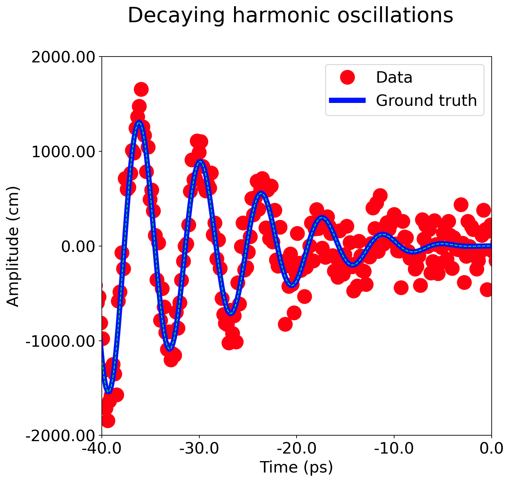

flowchart LR
A[Hard edge] --> B(Round edge)
B --> C{Decision}
C --> D[Result one]
C --> E[Result two]
You can run python code. This will be discussed more in the (Section 1.3)
Here is an example of a citation (Sharma et al. 2018)
This is an example of an inline math LaTex equation \(f(x)=x^2\)
This is an example of an display math LaTex equation \[f(x)=x^2+1\]
Black-Scholes (Equation 1) is a mathematical model that seeks to explain the behavior of financial derivatives, most commonly options:
\[ \frac{\partial \mathrm C}{ \partial \mathrm t } + \frac{1}{2}\sigma^{2} \mathrm S^{2} \frac{\partial^{2} \mathrm C}{\partial \mathrm C^2} + \mathrm r \mathrm S \frac{\partial \mathrm C}{\partial \mathrm S}\ = \mathrm r \mathrm C \tag{1}\]
Wave equation (Equation 2) is a mathematical model that seeks to explain the behavior of financial derivatives, most commonly options:
\[ \frac {\partial ^{2}u}{\partial t^{2}}=c^{2}\left({\frac {\partial ^{2}u}{\partial x_{1}^{2}}}+{\frac {\partial ^{2}u}{\partial x_{2}^{2}}}+\cdots +{\frac {\partial ^{2}u}{\partial x_{n}^{2}}}\right) \tag{2}\]
Multi-line equation (Equation 3) \[ \begin{split} A & = \frac{\pi r^2}{2} \\ & = \frac{1}{2} \pi r^2 \end{split} \tag{3}\]
Quarto has native support for embedding Mermaid and Graphviz diagrams.
This enables you to create flowcharts, sequence diagrams, state diagrams, gnatt charts, and more using a plain text syntax inspired by markdown.
For example, here we embed a flowchart created using Mermaid:
flowchart LR
A[Hard edge] --> B(Round edge)
B --> C{Decision}
C --> D[Result one]
C --> E[Result two]
In this section we show how to demonstate, caption, and reference figures (both generated with code and externally loaded)
In (Figure 1) we show a plot showing decaying oscillations

Here is another example of a citation (Hickman and Mishin 2016)
In (Figure 2) we show a plot showing decaying oscillations